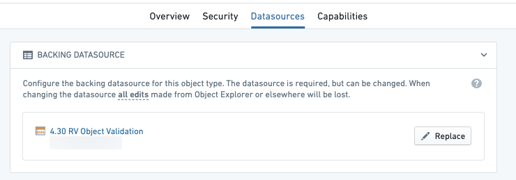
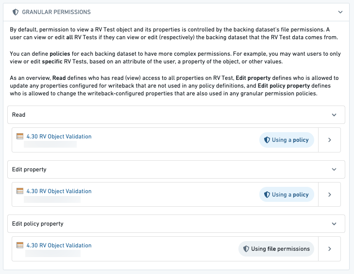

Restricted views (RVs) enable row-level access controls for ontology data. This allows for finer-grained access control than simply granting access to an entire dataset or all objects of a certain type.
Restricted views are similar to datasets but restrict access to specific rows in datasets. Restricted views are configured at the dataset level, and ontology objects inherit the granular permissions defined in the restricted view policy.
Backing an object type with a restricted view will control the specific objects a user can see. For example, if a user meets the requirements for a policy and can see a specific row in the restricted view, then they will be able to see the corresponding ontology object.
To view objects of an object type backed by a dataset, you must also be able to view the dataset.
When restricting specific objects from a user, only select restricted views in the Ontology Manager as an object typeâs backing datasource.

:::callout{theme="warning"} Access to an ontology object can be affected by user edits, since it is possible to edit a property that is referenced in the object's security. In such cases, a user might be able to see a row in the backing restricted view but not see the corresponding object in the ontology, or vice versa. :::
For example, consider a Ticket object type with the following data, where the policy on the restricted view requires you to be a member of the group in the Assignee column to see the row.
| Ticket ID | Title | Assignee |
|---|---|---|
| 101 | Ticket One | palantir-support |
If an action were applied to change the Assignee on this object to customer-support, then members of palantir-support who are not also members of customer-support will lose access to the object within the ontology. However, they will retain visibility of the row in the restricted view, which is unaffected by the action. Members of customer-support who are not also members of palantir-support would gain access to the ontology object, but still not be able to see the row in the restricted view.
The Datasources tab in the Ontology Manager will show additional configuration options to edit Granular Policies. The Granular Policies section allows you to configure permissions for editing objects of this type.
:::callout{theme="warning"} Granular Policies for edits can only be configured for object types using Object Storage v1 which do not have the Only allow edits via actions option selected. For all other object types, edit permissions are controlled via action types editing the object types. Learn more about action permissions. :::
You can configure these policies to accommodate cases where you want users to view or edit only specific objects based on their attributes (like a property of the object). For example, you may only want users from Europe (found in the region column) to see and edit European objects, which may differ from the restricted viewâs policy.
There are three policies that can define who can access the properties on an object:
region column with what is in the userâs attributes (Europe) to determine what objects the user can see.name property, but not who can edit the region property, since the region property is used in the policy.region property.
:::callout{theme="warning"} If view policies are changed after the object type was registered with Object Storage v1 (Phonograph), the registration must be updated through the Update button in the Phonograph section of the object type's Datasources tab in Ontology Manager. If the registration is not updated, the latest data of the restricted view may be made available based on previously registered policies. Automatic policy propagation is available by default in Object Storage v2. :::